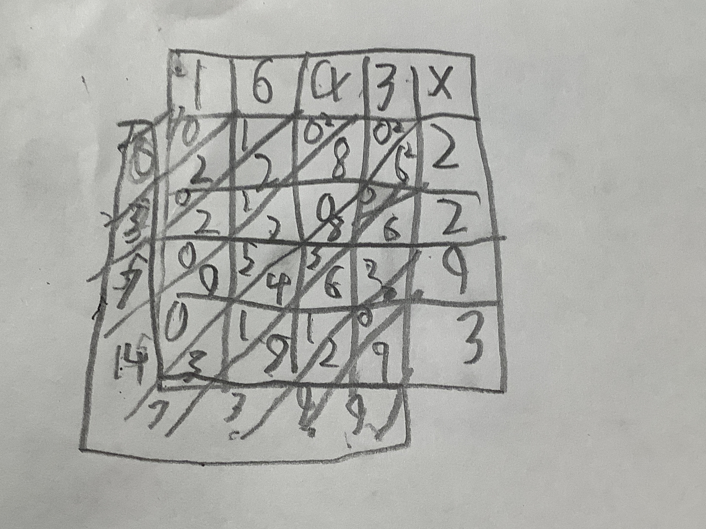

Let's start with an example. Here's how to multiply some HUGE numbers. Let's try 1,643 × 2,293!
According to the photo, the answer is 3,747,399. What a big number! Here's the check:
1,643 × 2,293 ≈ 2,000 × 2,000
= 4,000,000
Note for Big-O Notation experts: This procedure take O(n × m) time, where n is the length of the first number, and m is the length of the second number. So there are 16 steps:
See? 16 steps! Because 4 × 4 equals 16!
Note for Programming Experts: The psuedocode is shown below:
Define function called "Do Lattice Multiplication" with this code:
For each digit in the first number from right to left:
For each digit in the second number from right to left:
Multiply the first digit by the second digit.
Note for Swift experts: The Swift version is this:
func latticeMultiplication(_ num1: Int, _ num2: Int) -> Int {
// Set digits
var digits1 = String(num1).map { Int($0)! }.reversed()
var digits2 = String(num2).map { Int($0)! }.reversed()
// Track result
var result = 0
var placeValue = 1
// Multiply
for digit1 in digits1 {
for digit2 in digits2 {
result += (digit1 + digit2) * placeValue
placeValue *= 10
}
}
return result
}